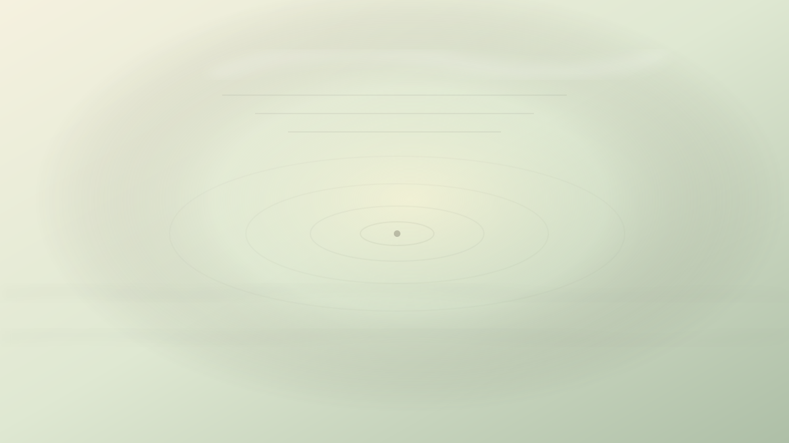

Ansiedade
Quanto da sua dor pertence ao futuro?
Marco Aurélio e a disciplina de não sofrer antes do acontecimento.

Você acorda antes do despertador. O quarto ainda está escuro, a casa está quieta, o dia nem começou a pedir suas respostas. Mesmo assim, o corpo já parece atrasado para uma batalha. A reunião será só à tarde. A conversa difícil talvez aconteça apenas amanhã. O resultado que você teme ainda não chegou. Mas a tensão já está inteira no peito, como se todos os cenários possíveis tivessem passado pela noite e deixado peso sobre o corpo.
Nada aconteceu ainda. Essa é a estranheza. A dor está presente, mas o acontecimento não. O futuro permanece fechado, indeterminado, incompleto. Ainda assim, a mente o abriu à força e espalhou dentro dele imagens de fracasso, perda, cobrança, vergonha, ruptura.
A pergunta deste ensaio nasce daí: quanto daquilo que você sofre agora pertence ao fato presente, e quanto foi acrescentado pela imaginação do futuro?
Marco Aurélio não escreveu sobre isso como alguém protegido da realidade. As Meditações não nasceram como livro público, nem como manual elegante para leitores distantes. São notas de um homem tentando governar a si mesmo enquanto governava um império. Havia doença, guerra, morte, obrigações, traições, irritações cotidianas, cansaço físico e o peso de decidir quando não havia garantia de decidir bem.
Por isso, quando Marco fala do presente, não está fazendo poesia leve sobre viver o agora. Ele está tentando impedir que a mente seja esmagada por uma totalidade que não existe diante dela. O estoicismo, nesse ponto, não é fuga do mundo. É uma disciplina da atenção em meio ao mundo.
Em uma passagem das Meditações, Marco aconselha a não deixar que as coisas futuras perturbem a mente. Se elas tiverem de chegar, diz ele em essência, encontraremos essas coisas com a mesma razão que já usamos para lidar com o presente. A força da ideia está na sobriedade. O futuro não precisa ser enfrentado duas vezes: primeiro como fantasia angustiada, depois como acontecimento real.
Há uma economia interior nessa percepção. A mente ansiosa tenta viver antes do tempo. Ela deseja se preparar, mas muitas vezes confunde preparação com repetição mental de catástrofes. Em vez de perguntar o que pode ser feito agora, ensaia o sofrimento inteiro como se a repetição garantisse controle.
Imagine uma conversa marcada para amanhã. O fato presente é simples: existe uma conversa marcada. Talvez seja difícil. Talvez exija coragem. Talvez seja preciso escolher palavras com cuidado. Mas o pensamento não se contenta com isso. Ele acrescenta cenas. Você será mal interpretado. A pessoa vai se afastar. Tudo terminará. Você não saberá responder. Depois da conversa, sua vida ficará menor.
Nada disso aconteceu. Mas, internamente, já houve julgamento, perda e sentença. A conversa futura colonizou o presente.
Marco Aurélio convida a desfazer esse bloco. Em outra passagem, ele recomenda não imaginar a vida inteira de uma vez, não reunir em uma única visão todos os sofrimentos que vieram ou que poderiam vir. Em vez disso, perguntar, em cada circunstância presente, o que nela é realmente insuportável. A pergunta parece simples, quase seca. Mas ela corta uma tendência profunda da ansiedade: transformar a vida inteira em um único peso.
O presente, isolado, muitas vezes é menor do que a história construída ao redor dele. Não necessariamente fácil. Não necessariamente agradável. Apenas menor. Uma conta a pagar é uma conta a pagar; a mente pode transformá-la em ruína total. Uma crítica é uma crítica; a mente pode transformá-la em prova definitiva de inadequação. Uma espera é uma espera; a mente pode transformá-la em abandono.
A disciplina estoica não pede que a pessoa finja que a dificuldade não existe. Ela pede proporção. O que está aqui? O que pertence ao fato? O que foi acrescentado pelo medo? O que posso responder agora? O que ainda não chegou e, portanto, ainda não exige a minha vida inteira?
É importante diferenciar Marco Aurélio de uma fórmula muito associada ao estoicismo: separar o que depende de nós do que não depende. Essa distinção é formulada de maneira especialmente direta por Epicteto. Marco também trabalha dentro desse horizonte estoico, mas sua voz nas Meditações frequentemente se volta para outro gesto: chamar a mente de volta da dispersão, lembrar a brevidade da vida, examinar a impressão que perturba, recolher-se ao presente e agir com justiça.
Ele não parece interessado em produzir uma teoria limpa para ensinar aos outros. Parece mais interessado em não se perder dentro de si. Isso dá às Meditações uma intimidade rara. Não é um mestre falando de cima. É um homem repetindo a si mesmo o que ainda precisa aprender.
A ansiedade, quando olha para o futuro, costuma perder escala. Ela toma uma possibilidade e a veste com inevitabilidade. Depois, exige que o corpo reaja como se a sentença já tivesse sido pronunciada. O futuro deixa de ser campo aberto e vira corredor fechado.
A ruptura proposta por Marco pode ser formulada assim: talvez a questão não seja nunca pensar no futuro, mas parar de sofrer por todos os futuros ao mesmo tempo.
Preparar-se é diferente de torturar-se. Preparar-se pergunta: que ação cabe agora? Que informação preciso buscar? Que conversa precisa ser feita? Que limite devo reconhecer? Torturar-se pergunta a mesma coisa de modo circular, sem transformar pensamento em gesto. A preparação termina em alguma forma de ação ou aceitação provisória. A preocupação repetitiva termina apenas em mais necessidade de pensar.
Há situações em que imaginar o futuro é prudente. Quem atravessa uma rua olha adiante. Quem cuida de uma família planeja. Quem enfrenta um problema de saúde precisa considerar possibilidades. O estoicismo não aboliu a previsão. Sem previsão não haveria responsabilidade.
O problema começa quando a previsão deixa de servir à vida e passa a devorá-la. Quando pensar no amanhã não ajuda a agir hoje, apenas rouba o hoje. Quando a mente chama de lucidez aquilo que é apenas repetição do pior cenário. Quando a prudência perde medida e se torna punição antecipada.
Marco Aurélio conhecia a necessidade de agir em circunstâncias difíceis. Por isso sua atenção ao presente não é um convite à passividade. O presente é o único lugar em que a razão pode operar. Não se age no futuro. Age-se agora, com os dados disponíveis agora, com a força possível agora, com o caráter que se consegue sustentar agora.
A mente ansiosa responde: mas e se eu não estiver pronto? Marco poderia devolver uma pergunta mais dura: você ficará mais pronto destruindo-se antes da hora? Quando o futuro chegar, se chegar, você o encontrará com alguma razão, alguma experiência acumulada, talvez até mais informação do que possui hoje. Sofrer antes não aumenta necessariamente sua capacidade de responder. Às vezes apenas chega ao acontecimento com a alma já fatigada.
Essa percepção não deve ser usada como acusação. A ansiedade não é defeito moral. Não é falta de inteligência. E, em muitos casos, envolve corpo, história, trauma, condições materiais, excesso de responsabilidade, precariedade, doença, pressão social. Filosofia não substitui cuidado psicológico, médico, comunitário ou concreto. Dizer “volte ao presente” a alguém em sofrimento real pode virar uma violência se for dito sem escuta.
Mas também é verdade que certas dores aumentam porque a mente as amplia para além do que está diante dela. Há uma parte do sofrimento que pertence ao acontecimento. Há outra que pertence à história que contamos antes do acontecimento. O trabalho filosófico começa quando tentamos distinguir uma coisa da outra sem brutalidade.
Em termos simples: o que exatamente está acontecendo agora? Não amanhã. Não no pior desfecho imaginado. Não na soma de tudo o que poderia falhar. Agora.
Talvez agora exista apenas uma tarefa. Uma ligação. Uma espera. Um corpo cansado. Uma pergunta sem resposta. Uma escolha pequena. Um limite. Um e-mail. Um exame ainda não divulgado. Uma conversa marcada. O presente pode ser difícil, mas raramente contém todos os monstros que a mente reuniu para representá-lo.
A força de Marco Aurélio está nessa redução da fantasia ao tamanho do instante. Não para empobrecer a vida, mas para devolvê-la ao lugar em que alguma coisa ainda pode ser feita. O futuro pode vir. Se vier, virá em forma de presente. E, quando chegar, não será enfrentado pela imaginação de hoje, mas pela razão, pelo corpo e pela presença daquele momento.
Talvez a disciplina não seja vencer a ansiedade de uma vez. Talvez seja perguntar, honestamente, cada vez que ela cresce: isto pertence ao que está acontecendo, ou pertence ao que eu estou acrescentando?
Se você não carregasse hoje todos os acontecimentos que ainda não chegaram, que parte da sua dor permaneceria neste instante?
Pergunta final
Se você não carregasse hoje todos os acontecimentos que ainda não chegaram, que parte da sua dor permaneceria neste instante?
Fontes e leituras
- AURÉLIO, Marco. Meditações. Livro 7, seção 8.
- AURÉLIO, Marco. Meditações. Livro 8, seção 36.
- AURÉLIO, Marco. Meditações. Livro 7, seção 29.
- Lexundria. Marcus Aurelius, Meditations 7.
- Lexundria. Marcus Aurelius, Meditations 8.36.
- Yale University Press. Marcus Aurelius and How to Cope with Anxiety, por Donald J. Robertson.
Leituras relacionadas
E você, o que está sentindo agora?
Escolha seu momento e encontre uma reflexão filosófica para atravessá-lo com mais clareza.
Encontrar uma reflexão